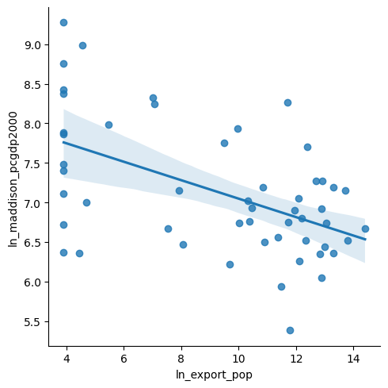
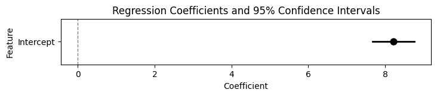
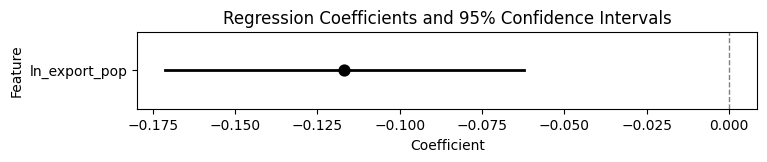
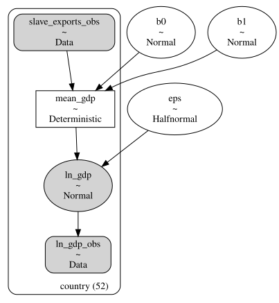
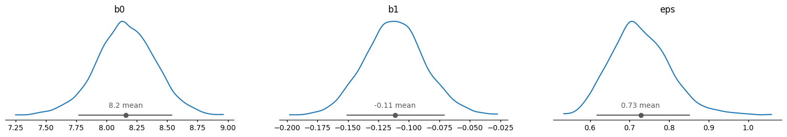
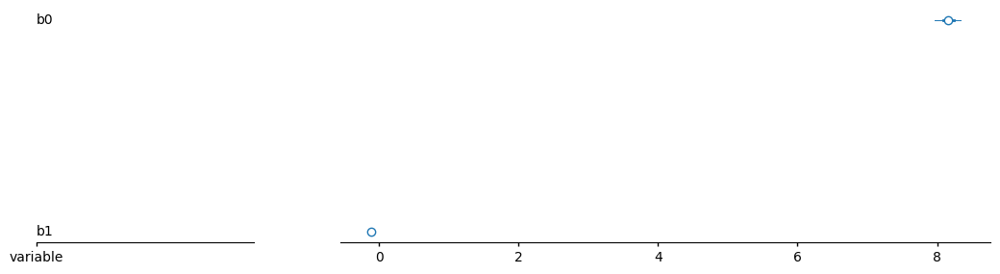
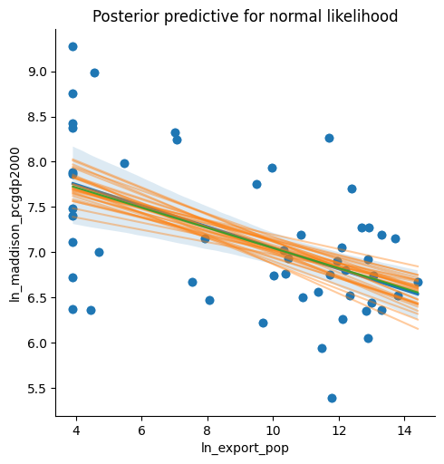
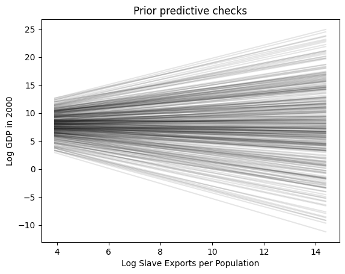
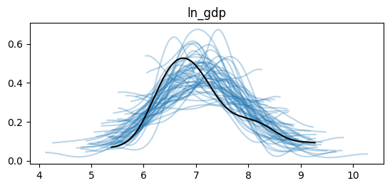
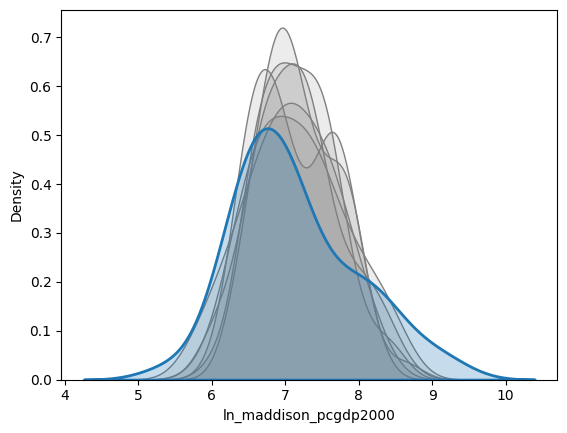

Code
import pandas as pd
import numpy as np
import matplotlib.pyplot as plt
import seaborn as sns
import statsmodels.api as sm
import statsmodels.formula.api as smf
import pymc as pm
import arviz as az
import xarray as xr
import preliz as pzDSAN 5650: Causal Inference for Computational Social Science
Summer 2026, Georgetown University
In lecture this week we started by looking at the following PGM, which “lays out” in explicit form many of the implicit assumptions that R’s lm() or Python’s statsmodels.ols() make when you as it to carry out a regression – so, what better way to start learning PyMC than to open it up and start learning how to “re-implement” standard linear regression, but now within a full modeling language that will then allow you to change any parameters you’d like!

And, one benefit of having a custom Coding Workshop just for this class is that, we can also choose a dataset that will help you get comfortable with Computational Social Science while you learn PyMC :) Specifically, we’ll be using a dataset from Nunn and Wantchekon (2011), “The Slave Trade and the Origins of Mistrust in Africa”, which is interesting on its own terms but also gives us an introduction to the Afrobarometer dataset that you’ll be diving into for HW2.
import pandas as pd
import numpy as np
import matplotlib.pyplot as plt
import seaborn as sns
import statsmodels.api as sm
import statsmodels.formula.api as smf
import pymc as pm
import arviz as az
import xarray as xr
import preliz as pznunn_data_url = "https://github.com/jpowerj/dsan-content/raw/refs/heads/main/2026-sum-dsan5650/workshop01/slave_trade_QJE.dta"
country_df = pd.read_stata(nunn_data_url)
country_df.head()| isocode | country | ln_maddison_pcgdp2000 | ln_export_area | ln_export_pop | colony0 | colony1 | colony2 | colony3 | colony4 | ... | ln_avg_oil_pop | ln_avg_all_diamonds_pop | ln_pop_dens_1400 | atlantic_distance_minimum | indian_distance_minimum | saharan_distance_minimum | red_sea_distance_minimum | ethnic_fractionalization | state_dev | land_area | |
|---|---|---|---|---|---|---|---|---|---|---|---|---|---|---|---|---|---|---|---|---|---|
| 0 | AGO | Angola | 6.670766 | 7.967494 | 14.399250 | 0.0 | 0.0 | 0.0 | 1.0 | 0.0 | ... | 0.643126 | -1.701396 | -0.024917 | 5.668760 | 6.980571 | 4.925892 | 3.872354 | 0.7867 | 0.635 | 1.2500 |
| 1 | BDI | Burundi | 6.354370 | 1.140843 | 4.451658 | 0.0 | 0.0 | 0.0 | 0.0 | 1.0 | ... | -9.210340 | -6.907755 | 3.036856 | 10.626214 | 2.570375 | 3.718742 | 2.215324 | 0.2951 | 0.995 | 0.0278 |
| 2 | BEN | Benin | 7.187657 | 8.304137 | 13.308970 | 0.0 | 0.0 | 1.0 | 0.0 | 0.0 | ... | -3.531555 | -6.907755 | 1.214196 | 5.120652 | 9.233961 | 2.834785 | 3.901736 | 0.7872 | 0.695 | 0.1130 |
| 3 | BFA | Burkina Faso | 6.748760 | 6.413822 | 11.724286 | 0.0 | 0.0 | 1.0 | 0.0 | 0.0 | ... | -9.210340 | -6.907755 | 0.908565 | 4.774938 | 9.299419 | 2.763519 | 4.239375 | 0.7377 | 0.338 | 0.2740 |
| 4 | BWA | Botswana | 8.377471 | -2.302585 | 3.912023 | 0.0 | 1.0 | 0.0 | 0.0 | 0.0 | ... | -9.210340 | 2.186849 | -2.075029 | 5.686335 | 5.764575 | 5.856533 | 4.299600 | 0.4102 | 0.893 | 0.6000 |
5 rows × 39 columns
country_df.columnsIndex(['isocode', 'country', 'ln_maddison_pcgdp2000', 'ln_export_area',
'ln_export_pop', 'colony0', 'colony1', 'colony2', 'colony3', 'colony4',
'colony5', 'colony6', 'colony7', 'abs_latitude', 'longitude',
'rain_min', 'humid_max', 'low_temp', 'ln_coastline_area', 'island_dum',
'islam', 'legor_fr', 'legor_uk', 'region_n', 'region_s', 'region_w',
'region_e', 'region_c', 'ln_avg_gold_pop', 'ln_avg_oil_pop',
'ln_avg_all_diamonds_pop', 'ln_pop_dens_1400',
'atlantic_distance_minimum', 'indian_distance_minimum',
'saharan_distance_minimum', 'red_sea_distance_minimum',
'ethnic_fractionalization', 'state_dev', 'land_area'],
dtype='str')statsmodelssns.lmplot(
x='ln_export_pop', y='ln_maddison_pcgdp2000',
data=country_df
);
plt.show()
gdp_model_sm = smf.ols('ln_maddison_pcgdp2000 ~ ln_export_pop', data=country_df).fit()
gdp_model_sm.summary()| Dep. Variable: | ln_maddison_pcgdp2000 | R-squared: | 0.271 |
|---|---|---|---|
| Model: | OLS | Adj. R-squared: | 0.257 |
| Method: | Least Squares | F-statistic: | 18.62 |
| Date: | Fri, 12 Jun 2026 | Prob (F-statistic): | 7.52e-05 |
| Time: | 19:01:34 | Log-Likelihood: | -55.065 |
| No. Observations: | 52 | AIC: | 114.1 |
| Df Residuals: | 50 | BIC: | 118.0 |
| Df Model: | 1 | ||
| Covariance Type: | nonrobust |
| coef | std err | t | P>|t| | [0.025 | 0.975] | |
|---|---|---|---|---|---|---|
| Intercept | 8.2151 | 0.269 | 30.499 | 0.000 | 7.674 | 8.756 |
| ln_export_pop | -0.1168 | 0.027 | -4.315 | 0.000 | -0.171 | -0.062 |
| Omnibus: | 0.176 | Durbin-Watson: | 2.527 |
|---|---|---|---|
| Prob(Omnibus): | 0.916 | Jarque-Bera (JB): | 0.376 |
| Skew: | 0.058 | Prob(JB): | 0.829 |
| Kurtosis: | 2.600 | Cond. No. | 27.4 |
# 3. Plot coefficients and 95% Confidence Intervals
param_df = gdp_model_sm.params.reset_index()
param_df.columns = ['Feature', 'Coefficient']
param_df = param_df.set_index('Feature')
# display(param_df)
conf_df = gdp_model_sm.conf_int()
conf_df.columns = ['Lower_CI', 'Upper_CI']
# display(conf_df)
full_coef_df = pd.concat([param_df, conf_df], axis=1).reset_index() \
.rename(columns={'index': 'Feature'})
display(full_coef_df)
def plot_coefs(coef_df):
plt.figure(figsize=(8, 1))
sns.pointplot(
data=coef_df,
x='Coefficient',
y='Feature',
linestyle='none',
errorbar=None,
markers='o',
color='black'
)
# Manually add confidence intervals
for idx, row in coef_df.reset_index().iterrows():
plt.plot(
[row['Lower_CI'], row['Upper_CI']],
[idx, idx],
color='black',
linewidth=2
)
# Vertical line representing 0 (no effect)
plt.axvline(0, color='gray', linestyle='--', linewidth=1)
plt.title('Regression Coefficients and 95% Confidence Intervals')
plt.show()
# Plot intercept
plot_coefs(full_coef_df[full_coef_df['Feature'] == 'Intercept'])
# Plot effect
b1_df = full_coef_df[full_coef_df['Feature'] == 'ln_export_pop'].copy()
plot_coefs(b1_df)| Feature | Coefficient | Lower_CI | Upper_CI | |
|---|---|---|---|---|
| 0 | Intercept | 8.215094 | 7.674079 | 8.756109 |
| 1 | ln_export_pop | -0.116754 | -0.171097 | -0.062410 |


I know it’s difficult if your brain has been trained to think that this is “the” information you can learn about the world from a regression, but try to think of the underlying scenarios that might be “masked” by the fact that we can only view a single point estimate (the dot) and a single uncertainty estimate (the width of the lines on either side of the dot). For example: is -0.117 actually the “most likely” value of the coefficient? Or, could this arise from a case where there are two “humps” in our distribution, at (say) -0.1 and -0.14, that “average out” to -0.117…
Another issue is… less mathematical and more interpretive, but also maybe more important: from your introductory stats class onwards, you have to constantly be reminded that a 95% confidence interval does not mean an interval with 95% probability of containing the true value! Instead, you have to constantly tamp down your intuition, and remember some strange statement about how “if you repeated the sampling procedure infinitely many times, 95% of those times the resulting interval would contain this parameter value”. Well, bucko, get excited because you won’t need to do that anymore with a Bayesian model like the ones you’ll be implementing here in PyMC!
By explicitly placing a prior probability on each parameter, you obtain a natural/intuitive implicational statement: “Given this prior, in combination with the data, there is a 95% chance that the true value is between \(x\) and \(y\)”
With the powerful computational tools we have at our disposal (multicore processors, parallelization, neural networks, etc.), we don’t have to “settle” for just two pieces of information about the intercept and the effect of slave exports, and we don’t have to “settle” for the default “flat priors” that then require weird statements about infinitely repeating sampling procedures. We can use these tools to estimate the full distribution of our uncertainty about these values, which is exactly what PyMC enables, by keeping full mathematical representations of both our prior knowledge (our distribution of likely parameter values before looking at the data) and posterior knowledge (our distribution of likely parameter values after looking at the data).
import pymc as pm
gdp_coords = {
'country': list(range(len(country_df))),
}
print(gdp_coords){'country': [0, 1, 2, 3, 4, 5, 6, 7, 8, 9, 10, 11, 12, 13, 14, 15, 16, 17, 18, 19, 20, 21, 22, 23, 24, 25, 26, 27, 28, 29, 30, 31, 32, 33, 34, 35, 36, 37, 38, 39, 40, 41, 42, 43, 44, 45, 46, 47, 48, 49, 50, 51]}with pm.Model(coords=gdp_coords) as gdp_model:
# Observed Data
slave_exports_obs = pm.Data(
"slave_exports_obs",
country_df['ln_export_pop'],
dims='country',
)
ln_gdp_obs = pm.Data(
"ln_gdp_obs",
country_df['ln_maddison_pcgdp2000'],
dims='country',
)
# X, Y nodes set up in PyMC
# Parameters
b0 = pm.Normal('b0', mu=8, sigma=0.5)
b1 = pm.Normal('b1', mu=0, sigma=0.5)
eps = pm.HalfNormal('eps', sigma=4)
# Linking them together!
mean_ln_gdp = pm.Deterministic(
'mean_gdp',
b0 + b1 * slave_exports_obs,
dims='country',
)
ln_gdp = pm.Normal(
'ln_gdp',
mu=mean_ln_gdp, sigma=eps,
observed=ln_gdp_obs,
dims='country',
)
gdp_model.to_graphviz()
with gdp_model:
idata = pm.sample(num_draws=1000)Initializing NUTS using jitter+adapt_diag...
Multiprocess sampling (4 chains in 4 jobs)
NUTS: [b0, b1, eps]Sampling 4 chains for 1_000 tune and 1_000 draw iterations (4_000 + 4_000 draws total) took 2 seconds.idata<xarray.DataTree>
Group: /
├── Group: /posterior
│ Dimensions: (chain: 4, draw: 1000, country: 52)
│ Coordinates:
│ * chain (chain) int64 32B 0 1 2 3
│ * draw (draw) int64 8kB 0 1 2 3 4 5 6 7 ... 993 994 995 996 997 998 999
│ * country (country) int64 416B 0 1 2 3 4 5 6 7 8 ... 44 45 46 47 48 49 50 51
│ Data variables:
│ b0 (chain, draw) float64 32kB 8.03 8.473 8.28 ... 8.215 8.086 8.127
│ b1 (chain, draw) float64 32kB -0.1094 -0.1458 ... -0.1042 -0.1067
│ eps (chain, draw) float64 32kB 0.7539 0.7357 0.6884 ... 0.7615 0.6839
│ mean_gdp (chain, draw, country) float64 2MB 6.454 7.543 ... 6.965 7.282
│ Attributes:
│ created_at: 2026-06-12T21:15:10.022915+00:00
│ creation_library: ArviZ
│ creation_library_version: 1.1.0
│ creation_library_language: Python
│ inference_library: pymc
│ inference_library_version: 6.0.0
│ sample_dims: ['chain', 'draw']
│ sampling_time: 1.5778107643127441
│ tuning_steps: 1000
├── Group: /sample_stats
│ Dimensions: (chain: 4, draw: 1000)
│ Coordinates:
│ * chain (chain) int64 32B 0 1 2 3
│ * draw (draw) int64 8kB 0 1 2 3 4 5 ... 995 996 997 998 999
│ Data variables: (12/18)
│ perf_counter_start (chain, draw) float64 32kB 2.496e+06 ... 2.496e+06
│ index_in_trajectory (chain, draw) int64 32kB 1 3 -6 -3 3 ... -1 -2 -3 2
│ tree_depth (chain, draw) int64 32kB 3 4 3 4 4 3 ... 2 2 2 4 3 3
│ divergences (chain, draw) int64 32kB 0 0 0 0 0 0 ... 0 0 0 0 0 0
│ step_size (chain, draw) float64 32kB 0.3604 0.3604 ... 0.2844
│ energy (chain, draw) float64 32kB 61.48 59.98 ... 58.59
│ ... ...
│ reached_max_treedepth (chain, draw) bool 4kB False False ... False False
│ lp (chain, draw) float64 32kB -58.42 -58.63 ... -57.68
│ smallest_eigval (chain, draw) float64 32kB nan nan nan ... nan nan
│ energy_error (chain, draw) float64 32kB 0.3076 ... -0.01318
│ max_energy_error (chain, draw) float64 32kB 0.5392 -0.2722 ... 0.03184
│ diverging (chain, draw) bool 4kB False False ... False False
│ Attributes:
│ created_at: 2026-06-12T21:15:10.039303+00:00
│ creation_library: ArviZ
│ creation_library_version: 1.1.0
│ creation_library_language: Python
│ inference_library: pymc
│ inference_library_version: 6.0.0
│ sample_dims: ['chain', 'draw']
│ sampling_time: 1.5778107643127441
│ tuning_steps: 1000
├── Group: /observed_data
│ Dimensions: (country: 52)
│ Coordinates:
│ * country (country) int64 416B 0 1 2 3 4 5 6 7 8 ... 44 45 46 47 48 49 50 51
│ Data variables:
│ ln_gdp (country) float64 416B 6.671 6.354 7.188 ... 5.384 6.501 7.155
│ Attributes:
│ created_at: 2026-06-12T21:15:10.044352+00:00
│ creation_library: ArviZ
│ creation_library_version: 1.1.0
│ creation_library_language: Python
│ inference_library: pymc
│ inference_library_version: 6.0.0
│ sample_dims: []
└── Group: /constant_data
Dimensions: (country: 52)
Coordinates:
* country (country) int64 416B 0 1 2 3 4 5 6 ... 46 47 48 49 50 51
Data variables:
slave_exports_obs (country) float64 416B 14.4 4.452 13.31 ... 10.89 7.925
Attributes:
created_at: 2026-06-12T21:15:10.047239+00:00
creation_library: ArviZ
creation_library_version: 1.1.0
creation_library_language: Python
inference_library: pymc
inference_library_version: 6.0.0
sample_dims: []az.plot_dist(
idata.posterior,
var_names=['b0','b1', 'eps'],
);
plt.show()
b0_mean = float(idata.posterior['b0'].mean())
b1_mean = float(idata.posterior['b1'].mean())
b0_mean, b1_mean(8.161833487707938, -0.11172543274908432)az.summary(idata.posterior, var_names=['b0', 'b1', 'eps'])| mean | sd | eti89_lb | eti89_ub | ess_bulk | ess_tail | r_hat | mcse_mean | mcse_sd | |
|---|---|---|---|---|---|---|---|---|---|
| b0 | 8.16 | 0.237 | 7.8 | 8.5 | 1447 | 1666 | 1.00 | 0.0063 | 0.0047 |
| b1 | -0.112 | 0.024 | -0.15 | -0.073 | 1466 | 1672 | 1.00 | 0.00064 | 0.0005 |
| eps | 0.724 | 0.075 | 0.62 | 0.85 | 2043 | 1992 | 1.00 | 0.0017 | 0.0014 |
az.plot_forest(idata.posterior.mean('chain'), var_names=['b0', 'b1']);
plt.show()
print(idata.posterior['b0'].quantile((.025, .975), dim=("chain", "draw")))
print(idata.posterior['b1'].quantile((.025, .975), dim=("chain", "draw")))<xarray.DataArray 'b0' (quantile: 2)> Size: 16B
array([7.68464826, 8.61926868])
Coordinates:
* quantile (quantile) float64 16B 0.025 0.975
<xarray.DataArray 'b1' (quantile: 2)> Size: 16B
array([-0.15813826, -0.06430003])
Coordinates:
* quantile (quantile) float64 16B 0.025 0.975post = az.extract(idata.posterior, num_samples=30)
x_plot = xr.DataArray(
np.linspace(
country_df['ln_export_pop'].min(),
country_df['ln_export_pop'].max(),
100
),
dims="plot_id"
)
lines = post["b0"] + post["b1"] * x_plot
lines2 = b0_mean + b1_mean * x_plot
sns.lmplot(
x='ln_export_pop', y='ln_maddison_pcgdp2000',
data=country_df
);
plt.scatter(country_df['ln_export_pop'], country_df['ln_maddison_pcgdp2000'], label="data")
plt.plot(x_plot, lines.transpose(), alpha=0.4, color="C1")
plt.plot(x_plot, lines2.transpose(), alpha=0.9, color='C2')
plt.title("Posterior predictive for normal likelihood");
plt.show()
How tf did we decide what prior to choose? The answer is… very carefully! Let’s bring in PreliZ
with gdp_model:
idata_pr = pm.sample_prior_predictive(draws=300)Sampling: [b0, b1, eps, ln_gdp]_, ax = plt.subplots()
x = xr.DataArray(
np.linspace(country_df['ln_export_pop'].min(), country_df['ln_export_pop'].max(), 50),
dims=["plot_dim"]
)
y = idata_pr.prior["b0"] + idata_pr.prior["b1"] * x
ax.plot(x, y.stack(sample=("chain", "draw")), c="k", alpha=0.1)
ax.set_xlabel("Log Slave Exports per Population")
ax.set_ylabel("Log GDP in 2000")
ax.set_title("Prior predictive checks");
This brings up something a bit… subtle but important about how you can start thinking in a PyMC way rather than an… R or Statsmodels way (though in R, you can use Stan or Ulam instead of PyMC! So if you are an R aficionado, this would be “thinking in a Stan rather than lm way”): since we are learning a language that will allow us to parameterize our models however we’d like, we can think of how we might customize this setup to help us in our modeling task: in other words, having the model “work for us” rather than trying to adapt our thinking to the model!
Specifically, what I’m referring to here is the fact that choosing a prior for \(\beta_0\) means specifying an “initial guess” (plus an uncertainty about that initial guess) for a country with exactly one slave exported (since \(\ln(x) = 0 \iff x = 1\)). Think about how this might be a strange “though experiment” for a researcher trying to understand the impact of slave exports on GDP: they may have expertise on essentially the trajectory of the “average” African country’s history from the era of the Atlantic Slave Trade to the present… and yet in statsmodels, by forcing them to model the intercept here, forces them to have to model a case that is by definition the most extreme possible outlier (since number of slaves exported can’t be less than 1 given the model setup).
And, it gets worse! Those of you who have studied house prices, for example, may have had to estimate a regression modeling how the square footage of a house impacts its price. Modeling the intercept in that case means trying to imagine what a house with 0 square feet might sell for on the housing market…
To avoid this, let’s now just make a slight modification to our PyMC model from above to enable us to do what is much more natural for us as social-scientific modelers: modeling the average or “most typical” unit of observation!
with gdp_model:
pm.sample_posterior_predictive(idata, extend_inferencedata=True)Sampling: [ln_gdp]idata.posterior<xarray.DataTree 'posterior'>
Group: /posterior
Dimensions: (chain: 4, draw: 1000, country: 52)
Coordinates:
* chain (chain) int64 32B 0 1 2 3
* draw (draw) int64 8kB 0 1 2 3 4 5 6 7 ... 993 994 995 996 997 998 999
* country (country) int64 416B 0 1 2 3 4 5 6 7 8 ... 44 45 46 47 48 49 50 51
Data variables:
b0 (chain, draw) float64 32kB 8.03 8.473 8.28 ... 8.215 8.086 8.127
b1 (chain, draw) float64 32kB -0.1094 -0.1458 ... -0.1042 -0.1067
eps (chain, draw) float64 32kB 0.7539 0.7357 0.6884 ... 0.7615 0.6839
mean_gdp (chain, draw, country) float64 2MB 6.454 7.543 ... 6.965 7.282
Attributes:
created_at: 2026-06-12T21:15:10.022915+00:00
creation_library: ArviZ
creation_library_version: 1.1.0
creation_library_language: Python
inference_library: pymc
inference_library_version: 6.0.0
sample_dims: ['chain', 'draw']
sampling_time: 1.5778107643127441
tuning_steps: 1000az.plot_ppc_dist(idata, num_samples=50, kind='kde');
plt.show()
post_pred_draws = idata.posterior_predictive['ln_gdp'].mean('chain')for cur_draw in post_pred_draws[:6]:
sns.kdeplot(
cur_draw,
fill=True, alpha=0.15, color='grey'
);
sns.kdeplot(country_df['ln_maddison_pcgdp2000'], fill=True, linewidth=2);
plt.show()